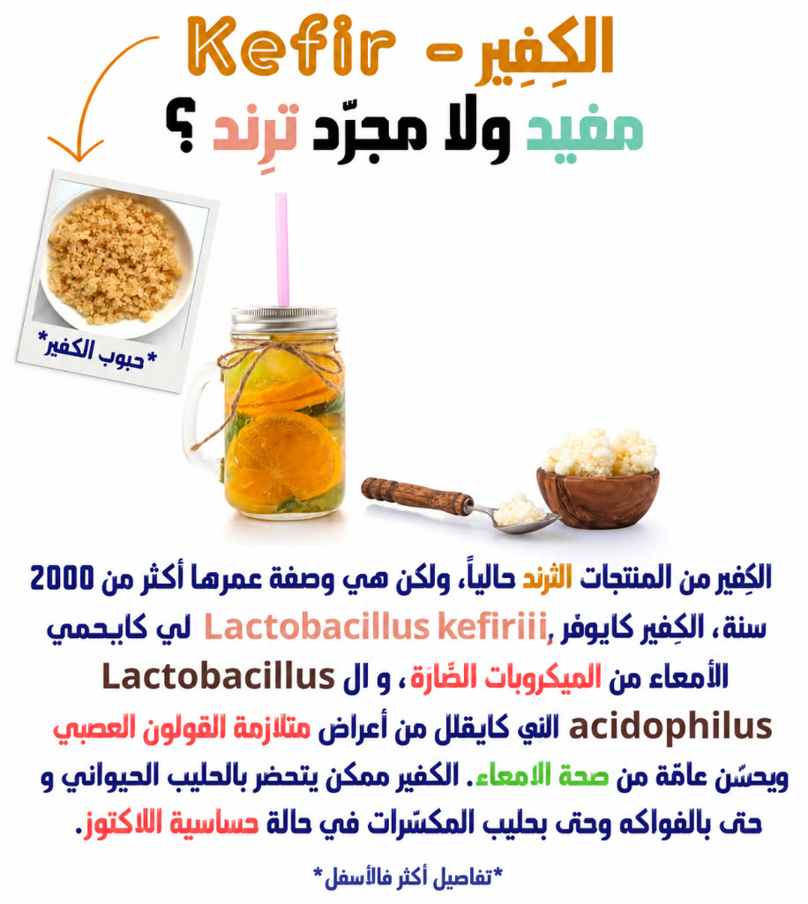
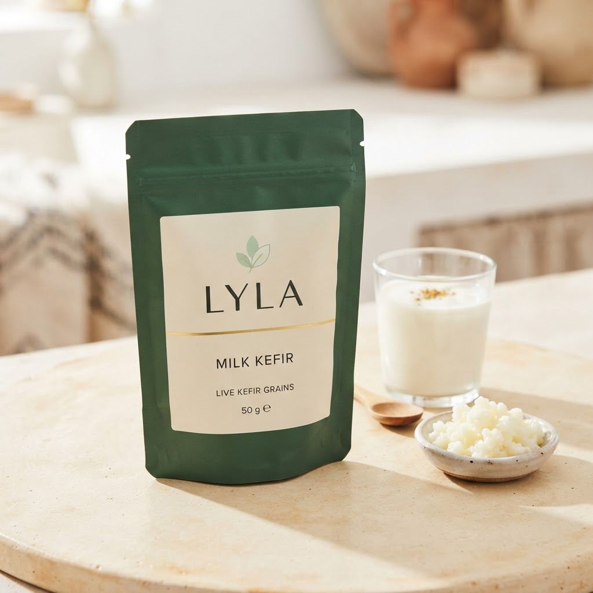
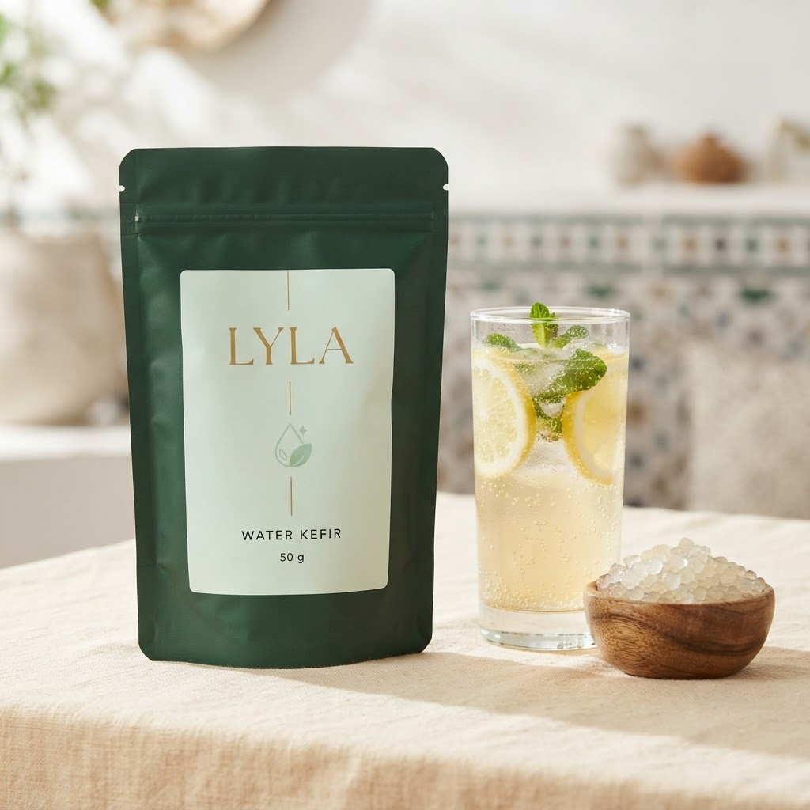

الكفير والقولون العصبي: شنو كتقول الدراسات؟
القولون العصبي (IBS) من أكثر الأسباب اللي كتخلي الناس تقلب على البروبيوتيك. الكفير كيبان خيار منطقي، ولكن خاصك تعرف الحدود قبل ما تبدا.

شنو كتقول الدراسات بصراحة
الدراسات على البروبيوتيك فالقولون العصبي كتعطي نتائج متفاوتة: بعضها كيشوف تحسن فالانتفاخ والألم، وبعضها ما كيشوفش فرق. الدراسات على الكفير بالخصوص قليلة ومحدودة الحجم. يعني: واعد ولكن ماشي مضمون.
علاش ممكن يساعد
- تنويع الميكروبيوم كيدعم توازن بكتيريا الأمعاء.
- اللاكتوز المنخفض كيقلل الغازات عند ناس كتضايقهم الحليب.
- الخمائر فالكفير ممكن تساعد فالهضم أكثر من البكتيريا بوحدها.
علاش ممكن يضر فالحالة ديالك
كفير الماء فيه غاز طبيعي وسكر متخمّر، وهادشي ممكن يزيد الانتفاخ عند ناس عندهم حساسية عالية (خصوصاً فطور FODMAP). كفير الحليب فيه لاكتوز مازال، ولو قليل.
بروتوكول البداية الآمن
- ابدا بـ50 مل فقط فالصباح.
- زد 50 مل كل 3 أيام إلا ماحسّيتيش بانتفاخ.
- خودو مع الماكلة ماشي على معدة خاوية فالبداية.
- دير جرد: سجل الأعراض كل يوم لمدة أسبوعين.
- إلا زادت الأعراض، وقّف 5 أيام وعاود بنص الكمية.
كفير الحليب ولا كفير الماء؟
لناس القولون، كفير الماء غالباً أسهل فالهضم حيت مافيهش لاكتوز. ولكن الغاز ممكن يكون مشكل. جرّب الجوج بكميات صغيرة وشوف.
أسئلة كترجع بزاف
شحال كياخد باش يبان الفرق؟
من أسبوعين لشهر، وماشي عند الكل.
واش نقدر ناخدو مع الأدوية؟
سول الطبيب. عادةً كيتنصح بفرق ساعتين على الأقل مع المضادات الحيوية.
مقالات أخرى على نفس الموضوع

فوائد الكفير: شنو مثبت علمياً وشنو غير كلام؟10 فوائد ديال الكفير مع شرح صادق: الهضم، المناعة، سكر الدم، العظام. وشنو مازال ما تأكدش عل…
كفير الحليب: شنو هو بالضبط وكيفاش كيتحضّر فالداركفير الحليب هو مشروب مخمّر بالحبوب الحية. نشرح شنو هو، منين جا، وشنو كيميّزو على الزبادي ا…
كفير الماء: الدليل الكامل من الحبوب حتى الكأسكفير الماء مشروب غازي طبيعي بلا كحول. دليل كامل: المكونات، النسب، مدة التخمير، وكيفاش تخرج…بغيتي تجرّب الكفير الحي؟
حبوب كفير الحليب وكفير الماء، 50 غرام، كتتكاثر معاك. توصيل لجميع المدن المغربية والدفع من بعد ما تعاين.